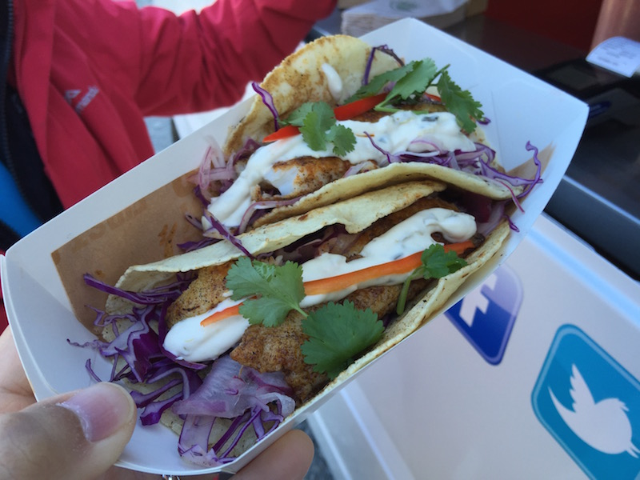
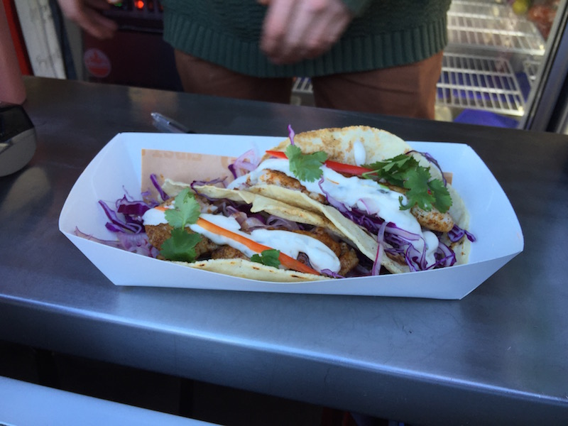
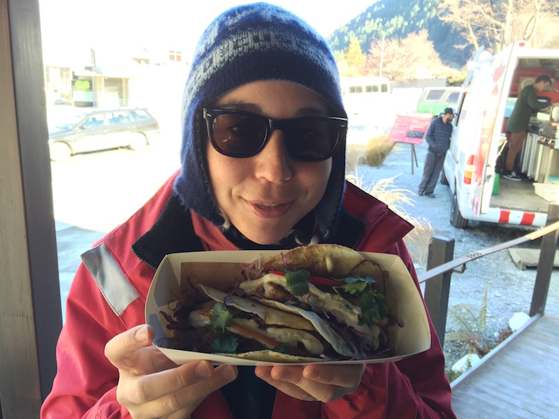

FOOD REVIEW: Taco Medic to save the day
<13 Jul 2015>
Roca kitchen photo ‘borrowed’ from here: http://www.multimediaenglish.org/?p=339
The number one restaurant in the world is now El Celler de Can Roca in Griona, Spain. They are doing innovative and incredible things with food, including cataloging rare spices and flavors to introduce them into society.
El Celler is at the forefront of a ‘gastro-botanical’ research project called Terra Animada that is cataloguing rare wild species with the aim of reintroducing them into our food systems.
Quote from: where I copied and pasted this line.
Time Magazine also tells us about the joy of eating at Roca. One starter they offer is called Eat The World, that encapsulates, in five bites, five different cuisines. They also have a dessert called Messi’s Goal, comprised of flying white chocolate balls, and a table side iPod literally playing a roaring crowd as you indulge in the dessert masterpiece.
(I looked that up on the internet, cool huh?)
So what’s my point?
I’m saying all this about Roca merely to set the stage for today’s Awesome Food Review. To come along side this blog post of GIANTS, I’m going to introduce you to another number one, I’m talking about Taco Medic ladies and gentlemen. Yes, you heard me right. That’s Taco Medic, the only number one rated restaurant in the Queenstown area according to Trip Advisor. If you don’t believe me, you can see for yourself, Taco Medic’s number one ranking

The tortillas, pronounced (tore-tee-yahs), are made fresh every morning and promptly discarded at the end of the day if they aren’t sold to some fresh taco enthusiast. This guarantees that the taco you order is worthy of your taco hole insertion. This fresh tortilla really did impress me and they make the taco that much more delicious. I’m from the home of some of the best Mexican food in the world, ‘Merica, and I thought that these tacos were pretty damn good. The owner apparently went to Mexico himself to learn the ways of the authentic Mexican tortilla.

Working from the outside tortilla inward, I could tell Taco Medic put just as much time on outward appearances as they did on the inside where it counts. I liked to mix of fresh crispy slaw, and savory sauces. The Fisherman taco I had had a perfect mix of tangy tartar and crispy fish flake. The pork belly taco had crunchy bits of crackling sprinkled for a nice salty fatty bite. Many delicious flavors include: The Bushman (pork belly), The Stockman (beef), The Fisherman (fish), and The Producer (for veggie lovers).
Like El Celler do Can Roca, Taco Medic is redefining the possibilities of one’s gastronomic experience by housing their “restaurant” out of a re-purposed ambulance, hence the name, Taco Medic. It’s nice to know that a vehicle that once saved the lives of many in the community, or at least brought grandpa to the emergency department safely, can now retire with dignity and be used to provide to community with delicious Mexican fare.

Who would have thought that in the middle of Queenstown, New Zealand, you could find authentic Mexican tacos. What’s next, meat pies in Mexico City?